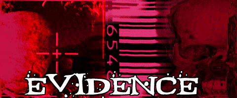

<html>
<!--  Created with the CoffeeCup HTML Editor  -->
<!--         http://www.coffeecup.com         -->
<!--      Brewed on 10/23/00 6:50:20 AM       -->
<head>
  <title>Rogue Squadron</title>
  <meta name="description" content="">
  <meta name="keywords" content="">
</head>
<body bgcolor="#000000" text="#FFFFFF" link="#0000FF" vlink="#FF00FF">

</body>
</html>

<center></center>
<p><b><center>Enjoy</center></b></p>

<center>http://mail.nashiktelecom.net is defaced</center>
<center>Machine hacked by rewtz .. website defaced by rewtz</center>
<center>Greetings goes first to TFIC general HQ but also to RSnake and #rootworm OLD-SKEWL</center>
<center>Webiste Defaced and Dedicated To GForce Pakistan by rewtz</center>
<center>Machine info.....</center>
<center>Linux mail.nashiktelecom.net 2.2.12-20 #1 Mon Sep 27 10:40:35 EDT 1999 i686 unknown</center>
<center>Filesystem  Size  Used Avail Use% Mounted on</center>
<center>/dev/hda1   3.8G  1.6G  2.1G  43%       /   </center>
<br>
<center>Old index.html has been renamed to index.html.old and everything i found on it is there.</center>
<br>
<hr align="center" width="30%">
<br>
<center><a href="mailto:rewt@altavista.com">[rewtz at altavista.com]</a></center>
<!-- www.attrition.org web hack mirror - watermark or something -->
